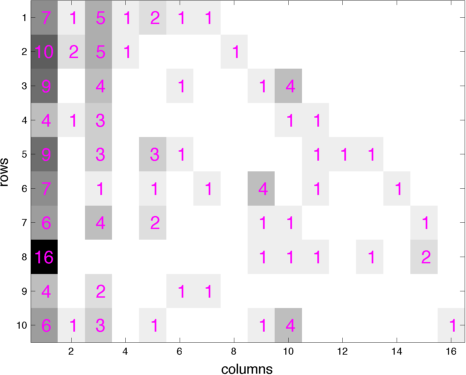

I am an Associate Professor and a Curtis Mathes Memorial Fellow at The University of Texas at Austin, with a promotion to Full Professor effective September 2025. I also work as a Visiting Faculty Researcher at Google DeepMind. My primary affiliation is with the
Statistics Group at the
McCombs School of Business. I also serve as core faculty in the
Department of Statistics and Data Sciences (SDS) and am a core member of the
Machine Learning Laboratory.
I completed my Ph.D. at
Duke University in 2013, earned my Master's from the
Chinese Academy of Sciences in 2008, and obtained my B.Sc. from
Nanjing University in 2005. My Ph.D. advisor was Dr.
Lawrence Carin.
I hold the position of an Action Editor at the Journal of Machine Learning Research and have regularly taken on the responsibilities of an Area Chair for conferences like ICLR, ICML, and NeurIPS. Our recent research endeavors have received financial and computing support from NSF, NIH, TACC, Apple, Microsoft, and Google.
My research group specializes in the field of probabilistic machine learning, with a current emphasis on advancing generative AI. Our primary areas of focus encompass probabilistic methods, Bayesian analysis, approximate inference, generative models, deep neural networks, and reinforcement learning. We are committed to pushing the boundaries of both statistical inference with deep learning and deep learning with probabilistic methods. The deep probabilistic models and inference algorithms developed within our group have demonstrated their effectiveness in addressing complex challenges across a broad spectrum of research domains. These domains include computer vision, natural language processing, sequential decision making, text analysis, image processing, time series modeling, graph mining, inverse materials design, and bioinformatics.
Most of our PhD graduates secure positions in the tech industry at companies such as Apple and Google, while others pursue academic careers at institutions like the University of Florida and Michigan State University.
To prospective Ph.D. students
You are welcome to apply to
Ph.D. in Statistics within the IROM department
Ph.D. in Use-Inspired AI within the IROM department
The statistics and data science Ph.D. program of the SDS department
Research Highlights
- [11/2024] Xizewen successfully defended his PhD thesis. Congratulations, Dr. Han!
- [11/2024] Zhendong successfully defended his PhD thesis. Congratulations, Dr. Wang!
- [08/2024] Yilin successfully defended his PhD thesis. Congratulations, Dr. He!
- [08/2024] Huangjie successfully defended his PhD thesis. Congratulations, Dr. Zheng!
- [06/2024] We have made the source code for SiD and SiD-LSG, our state-of-the-art diffusion distillation methods, publicly available on GitHub.
- [06/2024] We have released the code for LEGO-diffusion, an efficient and versatile multi-scale diffusion modeling framework.
- [02/2024] We have made the report and code for RPO, our method for fine-tuning LLMs under both paired and unpaired settings, publicly available.
- [10/2023] Shujian successfully defended his PhD thesis. Congratulations, Dr. Zhang!
- [09/2023] We are presenting six papers at NeurIPS 2023 (Beta diffusion, Prompt diffusion, Token-level preference grounding, Patch diffusion, Context-guided embedding adaptation, and Few-shot generation via recalling the episodic-semantic memory).
- [04/2023] I am honored to receive the 2022-2023 Research Excellence Award for Associate Professors from the McCombs School of Business.
- [04/2023] We are presenting four papers at ICML 2023 (Learning to Jump with Poisson Diffusion, Prompt-oriented unsupervised fine-tuning for large pretrained models, Prototype-oriented unsupervised anomaly detection for multivariate time series, and Bayesian Progressive Deep Topic Model with Knowledge Informed Textual Data Coarsening Process).
- [04/2023] Korawat successfully defended his PhD thesis. Congratulations, Dr. Tanwisuth!
- [02/2023] We are presenting four papers at ICLR 2023 (Diffusion Q-learning, Diffusion-GAN, Truncated Diffusion, Fantastic Rewards), two papers at AISTATS 2023, and two papers at CVPR 2023.
- [09/2022] We are presenting eight papers at NeurIPS 2022 (CARD: Classification and Regression Diffusion Models, Variational Edge Partition Model, A Unified Framework for Alternating Offline Model Training and Policy Learning, Adaptive Distribution Calibration for Few-Shot Learning with Hierarchical Optimal Transport, Learning to Re-weight Examples with Optimal Transport for Imbalanced Classification, Topic Taxonomy Mining with Hyperbolic Embedding, Alleviating Posterior Collapse via Policy Gradient, and Knowledge-Aware Bayesian Deep Topic Model).
- [09/2022] An NSF grant of $1.2 million is awarded to Dr. Xiaoning Qian and I to support our work: "Collaborative Research: III: Medium: Conditional Transport: Theory, Methods, Computation, and Applications."
- [08/2022] I will serve as an Area Chair for ICLR 2023.
- [07/2022] We are presenting three papers at ICML 2022.
- [04/2022] Alek successfully defended his PhD thesis. Congratulations, Dr. Dimitriev!
- [04/2022] Recognized by ICLR 2022 as a Highlighted Area Chair
- [04/2022] I will serve as an Area Chair for NeurIPS 2022
- [02/2022] Mingzhang Yin will join the Warrington College of Business at the University of Florida as a tenure-track Assistant Professor in Fall 2022.
- [01/2022] We are presenting three papers at ICLR 2022 (Word Embeddings to Topic Embeddings, Learning Prototype-oriented Set Representations, and Learning to Discover Novel Classes)
- [12/2021] I will serve as an Area Chair for ICML 2022.
- [10/2021] We are presenting seven papers at NeurIPS 2021 (Conditional transport for deep generative modeling, prototypical conditional transport for unsupervised domain adaptation, CARMS gradient estimator for categorical variables, convex polytope trees, alignment attention, TopicNet, and instance reweighting in adversarial training).
- [09/2021] I am appointed to the Curtis Mathes Memorial Fellowship.
- [06/2021] I will serve as an Area Chair for ICLR 2022.
- [05/2021] We are presenting three papers at ICML 2021 (Bayesian attention belief networks, multi-sample antithetic gradient for binary variables, and sawtooth factorial topic embeddings).
- [04/2021] Xinjie successfully defended his PhD thesis. Congratulations, Dr. Fan!
- [04/2021] Yuguang successfully defended his PhD thesis. Congratulations, Dr. Yue!
- [04/2021] I am joining the editorial board of the Journal of Machine Learning Research (JMLR) as an Action Editor.
- [03/2021] I will serve as an Area Chair for NeurIPS 2021.
- [02/2021] We are presenting two papers at CVPR 2021 (partition-guided GANs, and adaptive standardization and rescaling normalization for single domain generalization).
- [01/2021] We are presenting one paper at ICLR 2021 (contextual dropout) and two papers at AISTATS 2021 (graph gamma process LDS and hyperbolic graph embedding with enhanced SIVI).
- [11/2020] I will serve as an Area Chair for ICML 2021.
- [10/2020] We are presenting four papers at NeurIPS 2020, including "Implicit Distributional Reinforcement Learning" with Yuguang Yue and Zhendong Wang, "Bayesian Attention Modules" with Xinjie Fan, Shujian Zhang, and Bo Chen, "Bidirectional Convolutional Poisson Gamma Dynamical Systems" with Wenchao Chen, Chaojie Wang, Bo Chen, Yicheng Liu, and Hao Zhang, and "Deep Relational Topic Modeling via Graph Poisson Gamma Belief Network" with Chaojie Wang, Hao Zhang, Bo Chen, Dongsheng Wang, and Zhengjue Wang.
- [08/2020] We have started contributing our forecasts of COVID-19 deaths and cases in the US using negative binomial dynamical system (NBDS) to The COVID-19 Forecast Hub since July 27, 2020. We are sending the forecasts of NBDS on a weekly basis to The COVID-19 Forecast Hub and will keep track of its forecast performance, which we hope will help provide insights into how to further improve COVIDhub-ensemble.
- [07/2020] Quan successfully defended his PhD thesis. Congratulations, Dr. Zhang!
- [07/2020] I will serve as an Area Chair (senior meta reviewer) for AAAI 2021.
- [07/2020] I will serve as an Area Chair for ICLR 2021.
- [06/2020] "Deep autoencoding topic model with scalable hybrid Bayesian inference” is accepted by IEEE TPAMI.
- [06/2020] We are presenting three papers at ICML 2020, including “Thompson sampling via local uncertainty” with Zhendong Wang (UT SDS), “Recurrent hierarchical topic-guided RNN for language generation” with Dandan Guo, Bo Chen, and Ruiying Lu from Xidian University, and “Bayesian graph neural networks with adaptive connection sampling" with Arman Hasanzadeh, Ehsan Hajiramezanali, Shahin Boluki, Nick Duffield, Krishna Narayanan, and Xiaoning Qian from Texas A&M University.
- [05/2020] Mingzhang successfully defended his PhD thesis. Congratulations, Dr. Yin!
- [03/2020] I will serve as an Area Chair for NeurIPS 2020.
- [02/2020] Mingzhang Yin will join the Data Science Institute at Columbia University as a Postdoctoral Fellow in July 2020, working with Professors David Blei and Simon Tavare.
- [01/2020] We are presenting four papers at AISTATS 2020, including “Discrete action on-policy learning with action-value critic” with Yuguang Yue (UT SDS), Yunhao Tang (Columbia), and Mingzhang Yin (UT SDS), “Deep generative models of sparse and overdispersed discrete data” with He Zhao (Monash), Piyush Rai (IIT-Kanpur), Lan Du (Monash), Wray Buntine (Monash), and Dinh Phung (Monash), “Learnable Bernoulli dropout for Bayesian deep learning" with Shahin Boluki, Randy Ardywibowo, Siamak Zamani, and Xiaoning Qian from Texas A&M University, and “Learning dynamic hierarchical topic graph with graph convolutional network for document classification” with Chaojie Wang, Zhengjue Wang, Hao Zhang, Zhibin Duan, and Bo Chen from Xidian University.
- [12/2019] Quan Zhang will join the Eli Broad College of Business at Michigan State University as a tenure-track Assistant Professor in Fall 2020.
- [12/2019] We are presenting four papers at ICLR 2020, including "Adaptive correlated Monte Carlo for contextual categorical sequence generation" with Xinjie Fan (UT SDS), Yizhe Zhang (Microsoft Research), & Zhendong Wang (Columbia), "Variational hetero-encoder randomized generative adversarial networks for joint image-text modeling" with Hao Zhang, Bo Chen, Long Tian, & Zhengjue Wang from Xidian University, "Meta-learning without memorization" with Mingzhang Yin (UT SDS), George Tucker (Google Brain), Sergey Levine (UC Berkeley), & Chelsea Finn (Stanford), and "Mutual information gradient estimation for representation learning" with Liangjian Wen, Yiji Zhou, Lirong He, & Zenglin Xu from University of Electronic Science and Technology of China.
- We are presenting three papers at NeurIPS 2019, including "Poisson-randomized gamma dynamical systems" with Aaron Schein (Columbia), Scott Linderman (Stanford), David Blei (Columbia), and Hanna Wallach (Microsoft Research), and "Semi-implicit graph variational auto-encoders" and "Variational graph recurrent neural networks" with Ehsan Hajiramezanali, Arman Hasanzadeh, Krishna Narayanan, Nick Duffield, and Xiaoning Qian from Texas A&M University.
- I will serve as an Area Chair for AAAI-20.
- We are presenting three papers at ICML 2019, including "ARSM: Augment-REINFORCE-swap-merge estimator for gradient backpropagation through categorical variables" with Mingzhang Yin and Yuguang Yue from UT SDS, "Convolutional Poisson gamma belief network" with Chaojie Wang, Bo Chen, and Sucheng Xiao from Xidian University, and "Locally private Bayesian inference for count modeling" with Aaron Schein (Columbia), Steven Wu (University of Minnesota), Alexandra Schofield (Cornell), and Hanna Wallach (Microsoft Research).
- I will serve as an Area Chair for NeurIPS 2019.
- I will be promoted to Associate Professor (with tenure), effective September 1, 2019.
- "ARM: Augment-REINFORCE-merge gradient for stochastic binary networks," co-authored with Mingzhang Yin, is accepted for publicaiton at ICLR 2019.
- My collaborators and I are presenting six papers at NeurIPS 2018 that cover a diverse set of research topics, including "Nonparametric Bayesian Lomax delegate racing for survival analysis with competing risks" with Quan Zhang from UT McCombs, "Dirichlet belief networks as structured topic prior" with He Zhao, Lan Du, and Wray Buntine from Monash University, "Deep Poisson gamma dynamical systems" with Dandan Guo, Bo Chen, and Hao Zhang from Xidian University, "Bayesian multi-domain learning for cancer subtype discovery from next-generation sequencing count data" with Ehsan Hajiramezanali, Siamak Zamani Dadaneh, Alireza Karbalayghareh, and Xiaoning Qian from Texas A&M University, "Masking: A new perspective of noisy supervision" with Bo Han, Jiangchao Yao, Gang Niu, Ivor Tsang, Ya Zhang, and Masashi Sugiyama from University of Technology Sydney, Shanghai Jiao Tong University, and RIKEN, and "Parsimonious Bayesian deep networks" by myself.
- NSF proposal "Collaborative Research: Combinatorial Collaborative Clustering for Simultaneous Patient Stratification and Biomarker Identification" is funded by the Information Integration and Informatics (III) program.
- I will serve as an Area Chair for ICLR 2019.
- I will serve as a member of the Senior Program Committee (SPC) for AAAI-19.
- "Semi-implicit variational inference," co-authored with Mingzhang Yin, is accepted for publicaiton in ICML 2018.
- "Inter and intra topic structure learning with word embeddings," co-authored with He Zhao, Lan Du, and Wray Buntine, is accepted for publicaiton at ICML 2018.
- "A dual Markov chain topic model for dynamic environments," co-authored with Ayan Acharya and Joydeep Ghosh, is accepted for publicaiton at KDD 2018.
- I am honored to receive the 2017-2018 CBA Foundations Research Excellence Award for Assistant Professors from the McCombs School of Business
- I will serve as an Area Chair for NIPS 2018.
- "Permuted and augmented stick-breaking Bayesian multinomial regression," co-authored with Quan Zhang, is accepted for publicaiton in Journal of Machine Learning Research.
- "WHAI: Weibull hybrid autoencoding inference for deep topic modeling," co-authored with Hao Zhang, Bo Chen, and Dandan Guo, is accepted for publicaiton at ICLR 2018.
- "Nonparametric Bayesian sparse graph linear dynamical systems," co-authored with Rahi Kalantari and Joydeep Ghosh, is to appear at AISTATS 2018.
- "BayCount: A Bayesian decomposition method for inferring tumor heterogeneity using RNA-Seq counts," co-authored with Fangzheng Xie and Yanxun Xu, is accepted for publicaiton in Annals of Applied Statistics.
- "Multimodal Poisson gamma belief network," co-authored with Chaojie Wang and Bo Chen, is accepted by AAAI 2018.
- "Nonparametric Bayesian negative binomial factor analysis" is accepted for publication in Bayesian Analysis.
- The paper "Deep latent Dirichlet allocation with topic-layer-adaptive stochastic gradient Riemannian MCMC," coauthored with Yulai Cong and Bo Chen, is accepted by ICML 2017.
- The paper "BNP-Seq: Bayesian nonparametric differential expression analysis of sequencing count data," co-authored with Siamak Z. Dadaneh and Xiaoning Qian, is accepted for publication in Journal of the American Statistical Association. R code will follow soon. Using the gamma/beta negative binomial process, we remove sophisticated ad-hoc pre-processing steps commonly required in existing algorithms. Please take a look at our paper and code if you are interested in differential expression analysis of sequencing counts.
- I will serve as an area chair for NIPS 2017.
- Aaron Schein did a full oral presentation for our collaborative work in NIPS2016 at Barcelona: Aaron Schein (UMass-Amherst), Mingyuan Zhou (UT-Austin), and Hanna Wallach (MSR-NYC)," Poisson–Gamma Dynamical Systems," Neural Information Processing Systems, Barcelona, Spain, Dec. 2016.
- The paper "Augmentable Gamma Belief Networks," co-authored with Yulai Cong and Bo Chen, is now published in Journal of Machine Learning Research.
Matlab & C code for "Gamma Belief Networks" is now available in Github.
The graphical models shown below illustrate the hierarchical model and inference via data augmentation and marginalization across multiple hidden layers. - The paper "Frequency of frequencies distributions and size dependent exchangeable random partitions," co-authored with Stefano Favaro and Stephen G Walker, is accepted for publication in Journal of the American Statistical Association. Below is an interesting picture from this paper:
- Aaron Schein is presenting our collaborative work in ICML2016 at NYC: Aaron Schein (UMass-Amherst), Mingyuan Zhou (UT-Austin), David M. Blei (Columbia), and Hanna Wallach (MSR-NYC)," Bayesian Poisson Tucker decomposition for learning the structure of international relations," International Conference on Machine Learning, New York City, NY, June 2016.
- Matlab code for our JASA paper "Priors for random count matrices derived from a family of negative binomial processes" is now available in Github.
- Our NIPS2015 paper "The Poisson gamma belief network" presents a Poisson-gamma-gamma-gamma... generative model that can be used to unsupervisedly extract multilayer deep representation of high-dimensional count vectors, with the network structure automatically inferred from the data given a fixed budget on the width of the first layer. When applied to deep topic models, the Poisson gamma belief network (PGBN) extracts very specific topics at the first hidden layer and increasingly more general topics at deeper hidden layers. Jointly training all the layers is simple and the code is easy to implement, as a PGBN of T layers can be broken into T subproblems that are solved with the same subroutine, with the computation mainly spent on training the first hidden layer. The extracted deep network can also be used to simulate very interpretable synthetic documents, which reflect various general aspects of the corpus that the network is trained on.
- The paper "Priors for random count matrices derived from a family of negative binomial processes" is accepted for publication in Journal of the American Statistical Association.
- Two papers are accepted for publication at AISTATS 2015:
- Infinite edge partition models for overlapping community detection and link prediction.
- Nonparametric Bayesian factor analysis for dynamic count matrices.
- My NIPS2014 paper "Beta-negative binomial process and exchangeable random partitions for mixed-membership modeling" introduces a nonparametric Bayesian prior to describes how to partition a count vector into a latent column-exchangeable random count matrix, whose number of nonzero columns is random and whose each row sums to a fixed integer. Note that in topic modeling, one is essentially trying to partition a count vector, each element of which is the total length of a document, into a Document by Topic latent count matrix. A fully collapsed Gibbs sampling algorithm naturally arises from the latent count matrix prior governed by the beta-negative binomial process.
- The paper "Priors for random count matrices derived from a family of negative binomial processes" that I co-authored with O.-H. Madrid-Padilla and James Scott defines a family of probability distributions to generate infinite random count matrices, whose columns are independent, and identically distributed (i.i.d.). A random count matrix, with a Poisson distributed and potentially unbounded random number of columns, can be generated by either drawing all its i.i.d. columns at once or adding one row at a time. Both the gamma- and beta-negative binomial process random count matrices can model row-heterogeneity with row-wise parameters, whose conditional posteriors have closed-form expressions. The left (right) picture below shows a gamma (beta) negative binomial process random count matrix, whose rows are added one by one, with the new columns introduced by each row appended to the right of the matrix. Our models lead to nonparametric naive Bayes classifiers that do NOT need to predetermine a finite number of features that are shared across all the categories.
- The paper "Negative binomial process count and mixture Modeling" that I co-authored with Dr. Larry Carin will appear in IEEE Trans. Pattern Analysis and Machine Intelligence: Special Issue on Bayesian Nonparametrics. The picture below describes a useful bivariate count distribution discovered in the paper.




© July 2024, Mingyuan Zhou